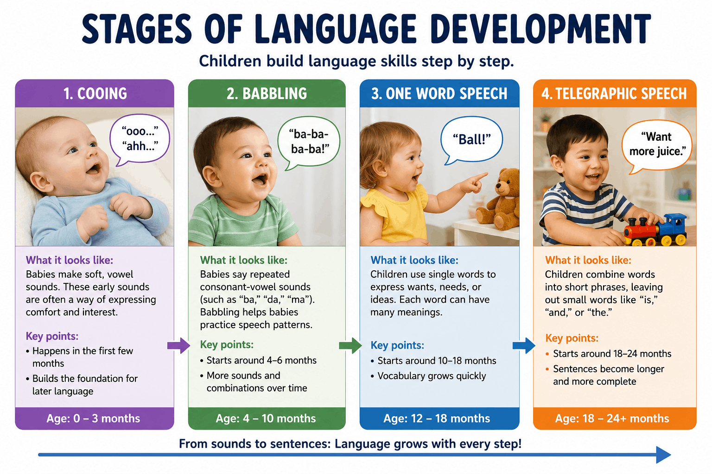

The Big Picture: The Generative Power of Language
Language is a shared, mutually agreed-upon system of arbitrary symbols that are rule-governed and highly generative. This system allows humans to communicate an infinite array of ideas, feelings, and novel concepts to one another. While our communication styles vary across cultures, the underlying structural properties and biological timeline of language acquisition remain remarkably universal. On the AP Exam, you will need to know both the structural anatomy of language and the developmental milestones infants cross as they learn to speak.
💡 AP Exam Tip: To keep your study plan streamlined and efficient, note that the pragmatics of language (the social rules governing how language is interpreted in varying contexts, such as sarcasm or politeness) are explicitly outside the scope of the AP Psychology Exam!
1.The Structural Anatomy of Language
Every language requires a rigid architectural layout to transform raw sounds into complex, abstract thoughts. This structure is governed by a broad set of rules known as grammar: the comprehensive system that dictates how words are structured, altered, and combined to produce meaningful communication. Psychologists split language structure into smaller, testable sub-components:
Sound and Meaning
- Phonemes
- The smallest structural units of sound in a spoken language that can be combined to form words. Altering a single sound unit can completely transform the entire word's meaning. For example, changing the "b" in the word bat to a "c" instantly creates the word cat.
- Morphemes
- The smallest units of meaning within a language. This category includes whole standalone words (like dog) as well as meaningful word fragments like prefixes and suffixes (such as the prefix un- meaning "not," or the past-tense suffix -ed).
- Semantics
- The branch of language study that deals directly with meaning, exploring how specific words, roots, and full sentences convey concepts, and analyzing how shifting situational contexts alter our interpretation of those messages.
Arranging the Pieces
To ensure that ideas are structured logically, language relies heavily on syntax: the precise grammatical rules that dictate the required arrangement, order, and sequence of words within a sentence to build a grammatically accurate and easily understood statement (e.g., in English, adjectives generally precede nouns, such as saying "the white house").
2.The Chronological Stages of Language Acquisition
Long before infants can produce formal words, they actively utilize nonverbal manual gestures (such as pointing at an object or waving goodbye) to establish a communicative bridge with caregivers. As their neurological and vocal structures mature, children across all distinct cultures naturally progress through a predictable, universal timeline of speech development:

- CooingAround 2 to 4 months
- The earliest vocal milestone, characterized by soft, repetitive, vowel-like sounds such as "oo" and "ah." These early vocalizations are unarticulated and typically reflect comfort, satisfaction, or pleasure.
- BabblingAround 4 to 10 months
- A critical transition stage where infants begin rapidly producing alternating consonant-vowel combinations like "ba-ba," "da-da," or "ma-ma." This phase serves as structural physical practice for speech mechanisms and initially includes sounds from global languages before narrowing down exclusively to the phonemes heard in the household.
- One-Word SpeechAround 12 months / 1 year
- The stage where children begin using single, isolated words to represent entire complex thoughts or complete sentences. For instance, an infant shouting "milk!" is utilizing a single word to convey "I want a cup of milk right now."
- Telegraphic SpeechAround 24 months / 2 years
- Early two-word communication where toddlers speak in abbreviated, highly efficient statements containing only essential root words, primarily pairing nouns and verbs (e.g., demanding "want cookie" or stating "daddy go"). This stage is named after old-fashioned telegrams because it completely strips away non-essential fillers like articles and prepositions.
3.Grammatical Growing Pains: Overgeneralization
As children grow and their understanding of syntax expands, they actively attempt to internalize structural linguistic patterns. Because they lean heavily on universal rules before mastering structural irregularities, they frequently fall victim to overgeneralization (sometimes called overregularization).
This language learning error occurs when a child takes a standard grammatical rule and applies it too broadly to irregular words that do not follow the guideline. Classic examples include adding standard past-tense suffixes to irregular verbs (such as saying "I goed to the park" instead of "went") or applying plural rules incorrectly (such as declaring "I saw three mouses" instead of "mice"). These errors are highly fascinating to psychologists because they prove that children do not just blindly mimic adult speech; they actively attempt to calculate and apply internal grammatical rules!
4.Don't Trip Up! (Common Misconceptions)
⚠️ Phonemes vs. Morphemes: This is a highly frequent point of confusion on the AP Exam! To protect your score, use these simple mnemonic hooks:
• Phoneme starts with 'P', just like Phone, it is strictly about the basic raw sound.
• Morpheme starts with 'M', just like Meaning, it is the smallest unit that carries an actual meaning.
Remember: a single letter can sometimes be both! The word "I" is a single sound (phoneme) and it also carries distinct meaning on its own (morpheme).
5.Key Terms in This Topic
6.Practice This Topic
Test yourself on exactly what you just read. The numbers on each button show how much material is waiting for you.
The same self-check questions that close your guided notes. Find out whether the parts of language and its stages stuck.
Start Quick Check →Flip through the key terms from this topic, including phonemes, morphemes, syntax, and telegraphic speech.
Open the deck →AP-style multiple choice on the structure of language, the stages of language development, and overgeneralization, with an explanation after every answer.
Take the quiz →